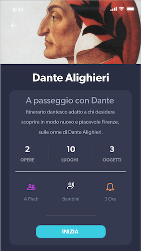
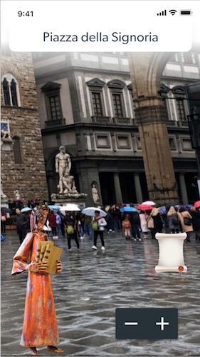
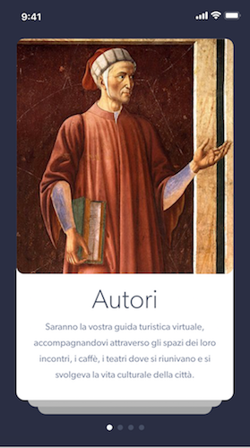

City Sightlearning
Cosa manca al lettore 2.0 per uscire dai flussi del tour standard e scoprire nuove realtà?
Come integrare il compito di promozione della lettura e della cultura del territorio nell'epoca del digitale?
Quali attività coinvolgono l'utente e consentono di scoprire le risorse informative tradizionali e digitali?
XanEdu è uno strumento per conoscere le città facendosele raccontare da scrittori e dalle loro storie. La piattaforma si basa su mappe “letterarie” in cui sono geolocalizzati i luoghi citati e descritti dagli autori nelle loro opere. L'obiettivo di XanEdu è fornire al lettore 2.0 la mappa per conoscere (o conoscere con altri occhi) i luoghi attraverso la voce di autori classici e contemporanei.Pensata per il viaggialettore digitale
XanEdu nasce come strumento per allargare l’esperienza di lettura, permettendo di collegare letteratura e realtà. Un tale approccio può trasformare un semplice percorso in un'avventura conoscitiva appassionante per chi ne usufruisce e allo stesso tempo un arricchimento per il territorio che vede così allargarsi la propria offerta culturale. Integra mappe, letteratura e virtuale
Per rendere accattivanti e divertenti gli itinerari proposti - non solo per gli adulti - ma anche per i più piccoli, XanEdu introduce nelle mappe degli oggetti virtuali, "collezionabili". L'app integra una modalità di visualizzazione basata sulla tecnologia di realtà aumentata e geolocalizzazione GPS. Ideata per coinvolgere, scoprire, divertire
A chi è dedicata e a che target si rivolge?
Con chi si svolgono i percorsi letterari?
Da chi sono ideati i percorsi letterari?
Non a un pubblico di nicchia, ma alla vasta schiera dei lettori potenziali. Non è presupposta una conoscenza di alcun tipo dell’autore o opera che si andrà a trattare, sono previsti diversi itinerari, adatti a diverse tipologie di utente e a diverse classi di età. In generale, XanEdu si rivolge:• a chi non ha tempo di leggere o non riesce a concentrarsi nella lettura, ma ne è attratto• a chi ama ritornare su un’opera o un autore che ha letto tempo prima • a chi ama un autore e vuole approfondirne alcuni aspetti• a chi abita in un determinato territorio e vuole conoscerlo attraverso nuovi occhi • al turista che ama esplorare il territorio anche attraverso altri punti di vista • agli studenti che si avvicinano a un’opera del programma scolastico e trovano con l'app XanEdu un valido supporto alla sua comprensione
XanEdu è utilizzata dagli utenti attraverso il proprio smartphone ma il percorso può essere svolto sia individualmente che in gruppo. L'applicazione si propone - oltre alla promozione dell'interesse letterario - anche la condivisione dell'esperienza. L'utilizzo di XanEdu ha una forte valenza aggregante in quanto ogni utente che si registra entra a far parte di una community. Oltre alla community virtuale, la cooperazione tra utenti sarà stimolata da diversi fattori: • gli utenti che non si conoscono si incontreranno, grazie alla geologalizzazione dei dispositivi • gli utenti che si conoscono e stanno svolgendo la visita in gruppo potranno condividere esperienze • la dimensione dinamica e interattiva consentirà non solo maggior coinvolgimento del singolo utente, ma anche dei gruppi
Per lo sviluppo dell'applicazione XanEdu i percorsi letterari proposti sono stati in parte ripresi dal web (sitografia) e in parte creati ad hoc. Nel sito è presente un'apposita sezione per consentire agli utenti di proporre un itinerario personalizzato. Quanto più si vuole allargare lo spettro degli utenti, tanto più è necessario coinvolgere la filiera degli attori interessati. In una prospettiva futura si prevede anche il coinvolgimento dei diversi enti presenti sul territorio: • le istituzioni culturali (archivi, biblioteche, musei): dal quale attingere fonti documentali • le amministrazioni o le fondazioni locali che attraverso progetti specifici, possono finanziare eventi di carattere letterario (festival, letture ecc.) • librerie e case editrici • negozi di merchandising locale, con cui stipulare convenzioni per gli utenti
Location based appL'app sfrutta la tecnologia di geo-localizzazione. Questo tipo di tecnologia permette all'utente in possesso del suo smartphone e dell'app XanEdu di ricevere, grazie al sensore GPS, informazioni sugli itinerari letterari fisicamente a lui vicini. L'intreccio tra il mondo della letteratura e mondo reale permette di visitarlo con occhi nuovi, inserendolo in una cornice narrativa. La geo-localizzazione applicata alla community di XanEdu facilita gli incontri tra viaggialettori poiché permette agli utenti di conoscere persone che si trovano nelle vicinanze o stanno svolgendo lo stesso percorso letterario e condividere interessi e passioni sulla letteratura.
Realtà aumentataUna visita turistica “potenziata” che sfrutta la fotocamera dello smartphone, per fornire informazioni in tempo reale sul percorso, sulla presenza di oggetti e luoghi di interesse. La letteratura si sposta dunque nel mondo reale e l'uso della realtà aumentata permette di sovrapporre alle immagini del posto in cui ci troviamo, visualizzate attraverso la videocamera delllo smartphone, le immagini degli autori, delle opere e dei contenuti digitali correlati (citazioni, foto, scansioni di mappe e manoscritti antichi). XanEdu parte da una piazza della città, una collina, una strada e la modifica con l’aggiunta di animazioni e contenuti digitali che consentono di avere una conoscenza più approfondita dell’ambiente che ci circonda.
Integrazione di Google MapsIl movimento nella realtà fisica è una componente essenziale: per completare il percorso letterario e bisogna percorrerlo per intero ed esplorare tutti i luoghi d'interesse segnalati sulla mappa. XanEdu integra Google Maps, il celebre servizio di navigazione satellitare che mette a disposizione le mappe di tutto il globo, per fornire informazioni utili ai vostri spostamenti, percorsi guidati e consigli su quali luoghi visitare. L'utente riceve le indicazioni stradali da seguire per spostarsi e percorrere l'itineraio letterario. Google Maps fornisce infatti un servizio aggiuntivo, Google My Maps che consente di creare itinerari, inserendo punti di interesse nella mappa, che diventa quindi personalizzata in base agli interessi dell'utente.
Facile da usareCon la suddivisione in pannelli è più facile che mai: in ogni sezione scoprirai cose nuove e divertenti, per soddisfare le tue curiosità e i tuoi interessi. Anche quelli che non sapevi di avere.
AccattivanteL'interfaccia è pensata per i suoi utenti, appartenenti a diverse tipologie e fasce di età. I colori sono stati scelti per non confondere e deviare l'attenzione. I messaggi di pop up e la grafica 3D sono pensati per divertire e coinvolgere l'utente.
Navigazione per contenutiLa modalità di selezione dell'itinerario è scelta dall'utente. Sono fornite quattro modalità di navigazione, suddivise in base ai contenuti. Le sezioni: Autori, Opere, Luoghi collegano questi ultimi ai relativi percorsi.
Saranno la tua guida turistica virtuale, accompagnandoti tra le strade della città.
Descriveranno i luoghi che visiti, coinvolgendoti all'interno della narrazione.
Troverai sulla mappa i più significativi scorci urbani o paesaggi, visti attraverso altri occhi.
Segui il filo di una narrazione, di una biografia, della letteratura e della storia.
Stato dell'arteLe applicazioni che offrono un ponte digitale fra mondo dei libri e mondo reale esistono già, ma non hanno ancora livello tecnico e modalità d'uso della realtà aumentata proprie dei videogiochi. XanEdu cerca l'allargamento dell'universo letterario al mondo della realtà aumentata. Tra i progetti già realizzati, ma relativi unicamente al mondo della letteratura o al mondo della realtà aumentata è importante citare quelli che sono stati fonte di maggiore ispirazione. XanEdu è un progetto che riunisce le caratteristiche relative alla maggior parte delle applicazioni analizzate in un unico prodotto, integrando la realtà aumentata agli itinerari letterari e fornendo, allo stesso tempo, un approccio ludico alle attività.
Analisi competitiva • App per tinerari letterari: CityTeller, APPasseggio, Tripline, Adelaide City Explorer; • Giochi in AR: Ingress, Pokemon Go, Harry Potter: Wizards Unite; Bibliografia • L'età della frammentazione. Cultura del libro e scuola digitale, Gino Roncaglia;• Realtà virtuale e realtà aumentata: Nuovi media per nuovi scenari di business, Lorenzo Montagna;• Cultura visuale: immagini, sguardi, media, dispositivi, Pinotti e Somaini;
Feedback Lo strumento Web costituisce un punto di accesso per gli utenti interessati a connettersi con gli sviluppatori per non solo, segnalare eventuali problemi o richiedere assistenza, ma anche per suggerire miglioramenti e lasciare recensioni. Inoltre, il sito è progettato per accogliere un’apposita sezione, per consentire agli utenti di proporre un itinerario personalizzato. I commenti lasciati dagli utenti possono essere un buon punto d'inizio. Gli utenti possono segnalare arresti anomali o bug, contattando gli sviluppatori. Le modalità previste per raccogliere i feedback sono: GoogleAnalitics, MixPanel, CrazyEgg, oltre ad un gruppo di utenti tester.
SviluppoAl momento non esiste un vero Team. Il concept e il visual design sono stati sviluppati da Federica Spinelli e Chiara Zamberti. Per lo sviluppo reale, per il piano di manutenzione e aggiornamento dell'app, sarà necessario trovare sviluppatori e grafici con cui formare un team. XanEdu ha bisogno di sviluppatori freelance!
PartnerPer il reperimento dei fondi si è pensato inizialmente all'autofinanziamento, per passare in una fase successiva alla pubblicazione del progetto su un piattaforma di crowdfunding. Per il reperimento di ulteriori fondi è prevista la collaborazione con negozi di merchandising locale, librerie, case editrici ed altre istituzioni presenti sul territorio.
FreemiumSono previste due versioni dell'applicazione: la versione base è a disposizione gratuitamente, mentre per usufruire della versione Premium con contenuti aggiuntivi (itinerari e funzioni ancora da sviluppare), l’utente dovrà pagare un determinato importo.